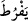

suya önden giden kimseye “ denir.
Yani, biz Fir’avn’un bizi cezâlandırmakta acele etmesinden, dâveti tamamlamaya ve
mûcize göstermeye sabredememesinden, bu yüzden de ona gönderilmemizden
beklenenin boşa çıkmasından korkarız.
“, ‘eziyette ifrâta gitmesinden korkarız’ anlamında “ diye de okunmuştur.
Eğer “Onlar izzet sâhibi olan Rab tarfından ona gönderilen birer peygamber
olduklarını bildikleri halde nasıl korkarlar?” denilirse şöyle cevap veririm: Bu korku,
insan yaradılışında var olan bir korkudur. Nitekim et-Te’vîlâtü’n-Necmiyye’de de
belirtildiği üzere bu âyet gösteriyor ki nebîlik ve rasullük mertebesine de ulaşmış olsa
insanın yaradılışında korku vardır. Nitekim âyette “Ey Rabbimiz! Onun bize karşı aşırı
davranmasından korkarız” buyrulmuştur. Yani bizi öldürmesinden korkarız. Ne var ki
bizim korkumuz, öldürülme korkusundan değil, peygamberliğimizi ve tebliğimizi
emrettiğin şekilde yapamama, görevimizi yerine getirememe korkusudur. Ya da bu korku
Fir’avn’un câhilliği sebebiyle azgınlaşması, senin emirlerine boyun eğmemesi ve sana
küfretmesi korkusudur.
“Yahut iyice azmasından endişe ediyoruz.” Yâni cür’et, kasvet ve serbestliğinin
kemâle ermesi sebebiyle senin hakkında gereksiz şeyler söyleyecek kadar azgınlığının
artmasından korkuyoruz. Çünkü o senin hakkında güzel edebe uygun sözler
söylememiştir. Fir’avn’un Allâh’a karşı azgınlığı, kendileri hakkında haddi aşmasından
daha büyük olduğu için Hz. Mûsâ sözünü onunla bitirdi. Çünkü mâzaret ileri süren
birisi, her zaman en güçlü mâzereti en sona bırakır. Nitekim Hüdhüd kuşu Süleyman
(a.s.)’a mâzeret beyan ederken sözünü “Onun ve kavminin Allâh’ı bırakıp güneşe
secde ettiklerini gördüm.” (en-Neml, 27/24) diye tamamlamıştır.
Fakir (Bursevî) der ki: Kasdedilenin ‘Fir’avn’un bize azgınlık yapmasından ve
kötülük yapmada ileri gitmesinden korkarız.’ şeklinde olması da mümkündür. Böylece
her iki husustan da korktukları belirtilmiş olur.
Havf (korku) zanna veya ilme dayanan belirtiler sebebiyle istenmeyen bir şeyin
meydana gelmesini beklemektir. Nitekim recâ ve tamah da zan veya ilme dayalı olarak
sevilen bir şeyin meydana gelmesi beklentisidir. Havf ve emniyetin zıddıdır. Havf ve
recâ kelimeleri hem dünyevî hem de uhrevi işlerde kullanılır. Nitekim âyette: “Onun
rahmetini umarlar, azabından korkarlar” buyrulmuştur. (el-İsrâ, 17/57) Allah’tan
korkmak ile hatıra gelen, aslanı görünce hissedilen korku kasdedilmez. Bilakis onunla
günahlardan el çekmek ve taatlara yönelmek kasdedilir.
46. Buyurdu ki: Korkmayın, çünkü ben sizinle beraberim; işitir ve görürüm.
Bu âyet açıklama için getirilmiş başlangıç cümlesidir. Sanki “Kendisine yakardıkları